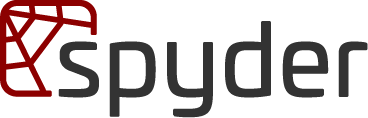
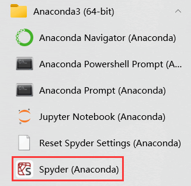
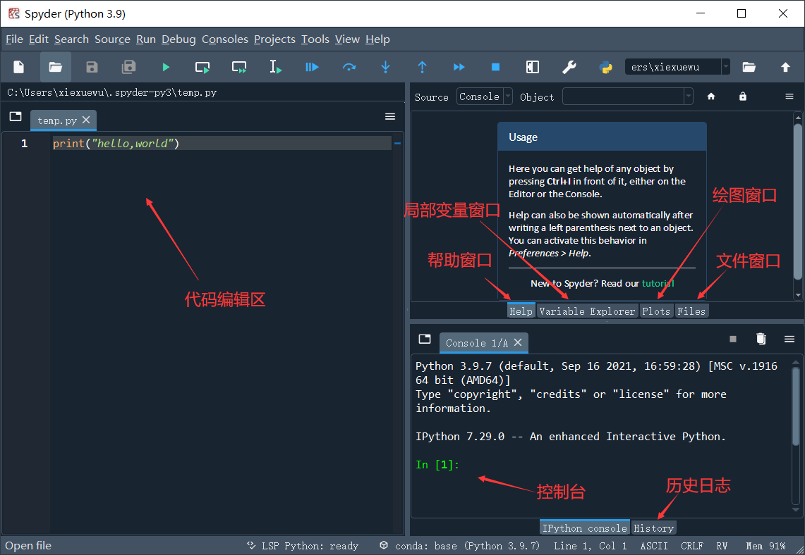
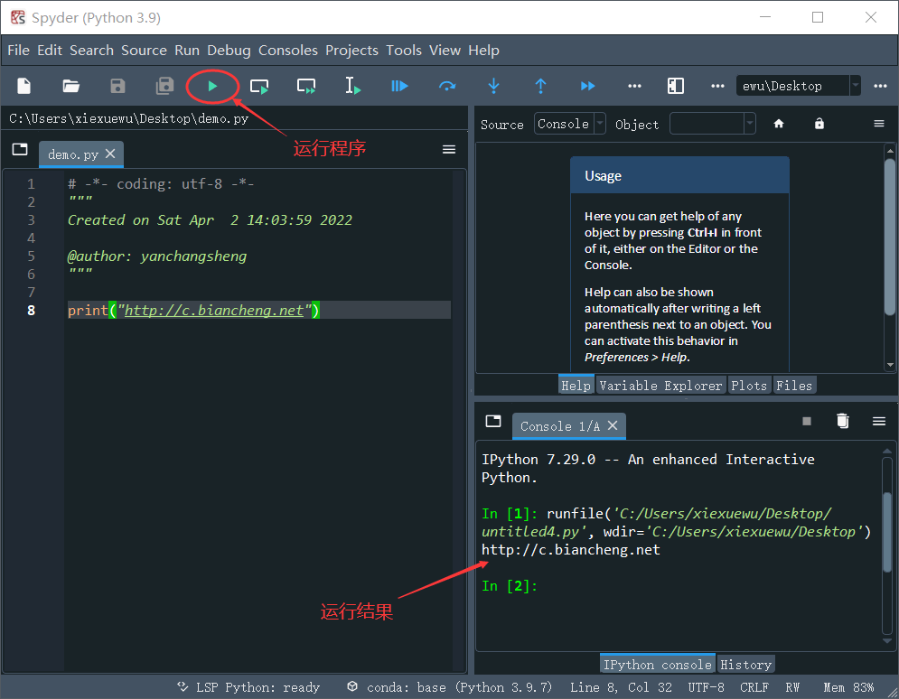

首页 > Python > Python编程环境搭建
Python Spyder下载、安装和使用教程
Spyder 是一款功能强大的 Python IDE（集成开发环境），集编写、运行、调试 Python 程序于一身，可以安装到多个平台上，包括 Windows、Linux、Mac OS X。
Spyder 除了拥有一般 IDE 普遍具有的编辑器、调试器、用户图形界面以外，还拥有对象查看器、变量查看器、交互式命令窗口、历史命令窗口等组件，这些组件都以窗格的形式展现给用户，用户可以根据需求调整它们的位置和大小。
Spyder 在设计上参考了 MATLAB，比如变量查看器模仿了 MATLAB 中“工作空间”的功能、拥有类似 MATLAB 的 PYTHONPATH 管理对话框等。熟悉 MATLAB 的读者，很快就能上手 Spyder。
安装 Spyder 的方式有两种，一种是下载 Spyder 安装包自行安装，另一种是通过 Anaconda 来安装。对于使用 Windows 和 Mac OS X 的读者，可以考虑第一种方法，更建议选择第二种方法；对于使用 Linux 的读者，手动安装 Spyder 的过程中很容易发生错误，且有些错误很难找到有效的解决方案，强烈建议选择第二种方法。
Anaconda 可以安装在多个平台上，包括 Windows、Linux 和 Mac OS X。Anaconda 官方分别提供了个人版、商业版、团队版和企业版这四种版本的 Anaconda，只有个人版是免费的。对于初学者而言，个人版完全够用，在 Anaconda 官网就可以找到对应平台的个人版安装包。Anaconda 的安装过程非常简单，和安装 QQ、迅雷等软件的过程类似，网络上也有很多介绍安装过程的文章，这里不再截图演示。
Anaconda 会自动安装一些常用的 Python 工具，其中就包括 Spyder，下图是笔者在 Windows 10 上成功安装的 Anaconda：
temp.py 是 Spyder 默认创建的文件，我们可以在这个文件中编写 Python 程序，也可以另行建立新文件。菜单栏中依次选择 "File -> New file"，或者直接在工具栏中选择“New file”，即可建立一个新文件。
编写好 Python 程序之后，点击工具栏中的

图 1 Spyder Logo
图 1 Spyder Logo
Spyder 除了拥有一般 IDE 普遍具有的编辑器、调试器、用户图形界面以外，还拥有对象查看器、变量查看器、交互式命令窗口、历史命令窗口等组件，这些组件都以窗格的形式展现给用户，用户可以根据需求调整它们的位置和大小。
Spyder 在设计上参考了 MATLAB，比如变量查看器模仿了 MATLAB 中“工作空间”的功能、拥有类似 MATLAB 的 PYTHONPATH 管理对话框等。熟悉 MATLAB 的读者，很快就能上手 Spyder。
Spyder安装
Spyder 支持在线试用，通过 Web 浏览器访问 Binder 上的 Spyder 页面，就可以试用功能齐全的 Spyder。安装 Spyder 的方式有两种，一种是下载 Spyder 安装包自行安装，另一种是通过 Anaconda 来安装。对于使用 Windows 和 Mac OS X 的读者，可以考虑第一种方法，更建议选择第二种方法；对于使用 Linux 的读者，手动安装 Spyder 的过程中很容易发生错误，且有些错误很难找到有效的解决方案，强烈建议选择第二种方法。
Anaconda 是一个“Python 科学计算全家桶”，包含科学计算领域可能用到的大部分 Python 工具，包括 Python 解释器、常用的第三方库、包管理器、IDE 等，其中就包括 Spyder。使用 Anaconda 安装 Spyder 非常简单，本节就采用这种方法。Spyder 官方给出各个平台手动安装 Spyder 的详细文档，想手动安装 Spyder 的读者可阅读 Spyder 安装指南。
Anaconda 可以安装在多个平台上，包括 Windows、Linux 和 Mac OS X。Anaconda 官方分别提供了个人版、商业版、团队版和企业版这四种版本的 Anaconda，只有个人版是免费的。对于初学者而言，个人版完全够用，在 Anaconda 官网就可以找到对应平台的个人版安装包。Anaconda 的安装过程非常简单，和安装 QQ、迅雷等软件的过程类似，网络上也有很多介绍安装过程的文章，这里不再截图演示。
Anaconda 会自动安装一些常用的 Python 工具，其中就包括 Spyder，下图是笔者在 Windows 10 上成功安装的 Anaconda：

图 2：安装成功的 Spyder
图 2：安装成功的 Spyder
Spyder的使用
打开 Spyder，它的主界面如下图所示：

图 3 Spyder主界面
图 3 Spyder主界面
temp.py 是 Spyder 默认创建的文件，我们可以在这个文件中编写 Python 程序，也可以另行建立新文件。菜单栏中依次选择 "File -> New file"，或者直接在工具栏中选择“New file”，即可建立一个新文件。
编写好 Python 程序之后，点击工具栏中的
▶按钮即可运行程序。

关注公众号「站长严长生」，在手机上阅读所有教程，随时随地都能学习。内含一款搜索神器，免费下载全网书籍和视频。

微信扫码关注公众号